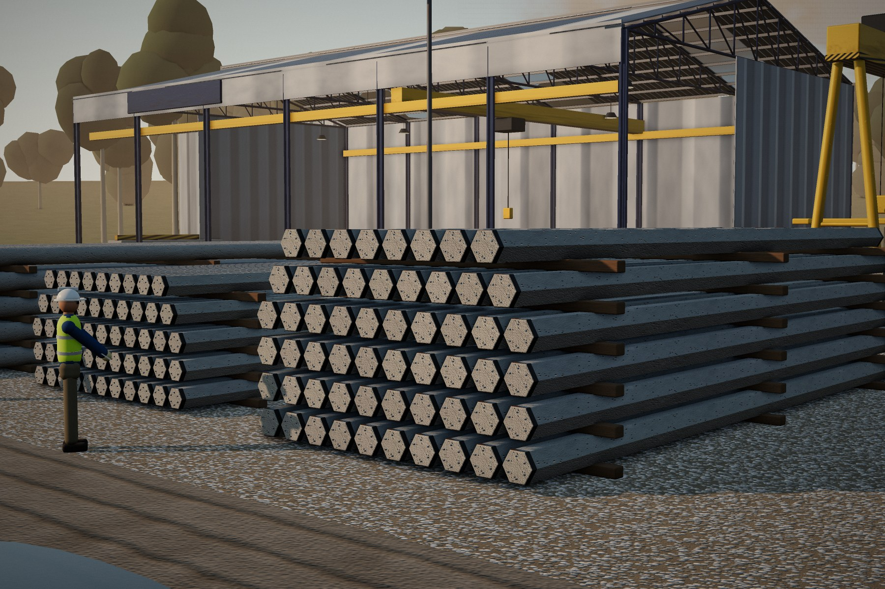
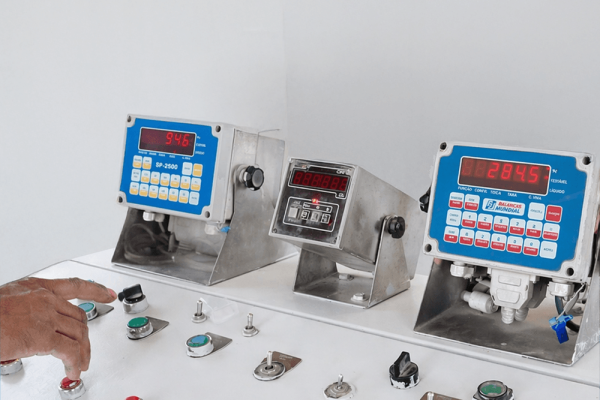
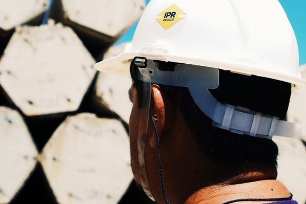

Aço
Verificação de propriedades mecânicas e certificados de qualidade conforme normas técnicas.

Controle de qualidade
Excelência operacional fundamentada na conformidade técnica e na rastreabilidade total de cada etapa produtiva.
Qualificação e homologação de insumos
A cadeia de suprimentos da IPR é estritamente vinculada a fornecedores que apresentam certificações de conformidade.
Verificação de propriedades mecânicas e certificados de qualidade conforme normas técnicas.
Controle de granulometria, índice de forma e pureza dos agregados.
Validação de procedência e conformidade com os requisitos de resistência e tempo de pega.
Central de concreto automatizada
Central própria, com estabilidade das propriedades reológicas do material.

Controle tecnológico do concreto
Durante a concretagem de cada estaca são extraídas amostras para moldagem de corpos de prova cilíndricos, ensaiados em períodos críticos.
Acompanha o ganho inicial de resistência do concreto protendido, informação essencial para as etapas de desmoldagem e manuseio das peças.
Confirma a evolução da resistência nas primeiras idades e a consistência do traço produzido pela central automatizada.
Verificação intermediária que permite antecipar desvios e garantir que o lote evolui conforme o projetado.
Validação estrutural: a conformidade do lote é condicionada ao alcance dos valores projetados de fck, assegurando a integridade da fundação.
Inspeção pós-produção e desmoldagem
Após o período inicial de cura e desmoldagem, todas as unidades são submetidas à Inspeção Visual Individual. O protocolo visa identificar:

Nota técnica: todos os processos são documentados, gerando um histórico de rastreabilidade que vincula cada estaca aos resultados laboratoriais de seu respectivo lote de concreto.
Orçamento técnico
Fale com nossos especialistas e solicite um orçamento técnico para o seu projeto. Envie a sondagem SPT e as cargas de projeto para agilizar a análise.